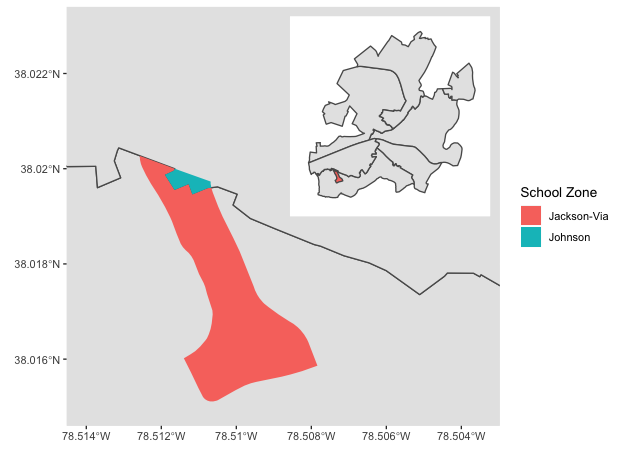

Workshop on R
May 2018
Hosted by Virginia Education Science Training (VEST) Program at UVA

Overview Schedule Getting started Modules Data
Mapping in R
This module will show some basic mapping tasks, including merging geospatial data and making an interactive Leaflet map. We’ll use spatial data from the Charlottesville, VA, open data portal, which will also give us practice using APIs.
Requirements
Even though ggplot2 is a part of the tidyverse suite of packages, you will need to download the development version of ggplot2 from GitHub in order to plot maps using the new sf package. Use the devtools package to get it:
## get development version of ggplot2 if needed
devtools::install_github('tidyverse/ggplot2')
You may also need to install the following libraries on your computer:
MacOS users can get these libraries (GDAL Complete) from here.
## libraries
libs <- c('tidyverse','leaflet','sf','RColorBrewer')
lapply(libs, require, character.only = TRUE)
Quick API function
Inspecting the API string used to make a data request, the format across data sets is fairly regular with a few variations. Though it’s probably overkill to write a function (and we could probably write a cleaner one), rewriting the API string over and over again also seems tedious and error prone.
So here’s function that requires the map server number, the open data number (which is 1 for both our data sets), and a string vector of the variables we want, with the default being all of them. We still need to use the open data portal to figure out what arguments we need to provide for each data set, but the function will make us a nice API string that we won’t need to build ourselves.
## quick function to help use Charlottesville API
cville_api_url <- function(mapserver_number,
open_data_number = 1,
variable_vector = c('*')) {
base <- paste0('https://gisweb.charlottesville.org/',
'arcgis/rest/services/OpenData_',
open_data_number,
'/MapServer/')
mid <- '/query?where=1%3D1&outFields='
var <- paste(variable_vector, collapse = ',')
end <- '&outSR=4326&f=json'
return(paste0(base, mapserver_number, mid, var, end))
}
Request data
First, we’ll get spatial data for the six elementary school catchments zones in Charlottesville. These only come with the zone name, so we’ll request all variables.
## get school link
sch_link <- cville_api_url(mapserver_number = 16)
## get school data
sch <- st_read(sch_link) %>%
## lower variable names
setNames(tolower(names(.))) %>%
## rename the unique id for later join
rename(objectid_sch = objectid)
Reading layer `OGRGeoJSON' from data source `https://gisweb.charlottesville.org/arcgis/rest/services/OpenData_1/MapServer/16/query?where=1%3D1&outFields=*&outSR=4326&f=json' using driver `GeoJSON'
Simple feature collection with 6 features and 2 fields
geometry type: MULTIPOLYGON
dimension: XY
bbox: xmin: -78.52378 ymin: 38.00968 xmax: -78.44636 ymax: 38.07053
epsg (SRID): 4326
proj4string: +proj=longlat +datum=WGS84 +no_defs
## show
sch
Simple feature collection with 6 features and 2 fields
geometry type: MULTIPOLYGON
dimension: XY
bbox: xmin: -78.52378 ymin: 38.00968 xmax: -78.44636 ymax: 38.07053
epsg (SRID): 4326
proj4string: +proj=longlat +datum=WGS84 +no_defs
objectid_sch zone geometry
1 1 Burnley-Moran MULTIPOLYGON (((-78.46053 3...
2 2 Clark MULTIPOLYGON (((-78.47802 3...
3 3 Venable MULTIPOLYGON (((-78.47841 3...
4 4 Jackson-Via MULTIPOLYGON (((-78.49029 3...
5 5 Johnson MULTIPOLYGON (((-78.49289 3...
6 6 Greenbrier MULTIPOLYGON (((-78.47221 3...
Next, we’ll get census block spatial data. These data also include population numbers broken out by demographics such as race / ethnicity. Because many public schools across the country remain largely segregated by race in 2018, in practice if no longer by law, investigating the demographic make up of school catchment zone remains an important task, particularly when resource allocation and student outcomes are correlated with surrounding population characteristics.
For this module, we’ll limit the census data to overall population counts (2010) and available racial/ethnic subgroup counts.
## get census block data link, with subset of variables
vars <- c('OBJECTID','Block','Population',
'Hispanic_Origin','NH_Wht','NH_Blk',
'NH_Ind','NH_Asn')
cba_link <- cville_api_url(mapserver_number = 13,
variable_vector = vars)
## get census block data
cba <- st_read(cba_link) %>%
## set names to lower
setNames(tolower(names(.))) %>%
## rename for later join and to make names clearer
rename(objectid_cba = objectid,
pop = population,
amerind = nh_ind,
asian = nh_asn,
black = nh_blk,
hispanic = hispanic_origin,
white = nh_wht) %>%
## create other race/ethnicity category
mutate(other = pop - amerind - asian - black - hispanic - white)
Reading layer `OGRGeoJSON' from data source `https://gisweb.charlottesville.org/arcgis/rest/services/OpenData_1/MapServer/13/query?where=1%3D1&outFields=OBJECTID,Block,Population,Hispanic_Origin,NH_Wht,NH_Blk,NH_Ind,NH_Asn&outSR=4326&f=json' using driver `GeoJSON'
Simple feature collection with 803 features and 8 fields
geometry type: POLYGON
dimension: XY
bbox: xmin: -78.52364 ymin: 38.00959 xmax: -78.44631 ymax: 38.0706
epsg (SRID): 4326
proj4string: +proj=longlat +datum=WGS84 +no_defs
## show
cba
Simple feature collection with 803 features and 9 fields
geometry type: POLYGON
dimension: XY
bbox: xmin: -78.52364 ymin: 38.00959 xmax: -78.44631 ymax: 38.0706
epsg (SRID): 4326
proj4string: +proj=longlat +datum=WGS84 +no_defs
First 10 features:
objectid_cba block pop hispanic white black amerind asian
1 1 515400006002011 377 16 166 28 0 144
2 2 515400006002012 0 0 0 0 0 0
3 3 515400006002006 10 2 8 0 0 0
4 4 515400006002005 2 0 2 0 0 0
5 5 515400006002004 195 17 91 28 0 54
6 6 515400006002003 62 2 47 2 0 11
7 7 515400006002002 425 14 177 30 0 193
8 8 515400006002001 99 3 81 2 0 12
9 9 515400006002000 119 3 76 4 0 31
10 10 515400007004017 0 0 0 0 0 0
other geometry
1 23 POLYGON ((-78.51184 38.0262...
2 0 POLYGON ((-78.51238 38.0269...
3 0 POLYGON ((-78.51974 38.0284...
4 0 POLYGON ((-78.51964 38.0289...
5 5 POLYGON ((-78.51939 38.0284...
6 0 POLYGON ((-78.5165 38.02864...
7 11 POLYGON ((-78.51447 38.0287...
8 1 POLYGON ((-78.5126 38.02695...
9 5 POLYGON ((-78.51218 38.0272...
10 0 POLYGON ((-78.51627 38.0403...
Elementary attendance zones
As a first step, let’s plot the elementary school catchment zones using
leaflet. Since we don’t care about the displayed color of each zone
other than they be different to show separation between each, we’ll set
up a colorFactor() palette that we’ll then use with the fillColor
argument in addPolygons().
Notice how the leaflet functions can be piped together like dplyr
functions. Also notice how arguments that vary by group use a tilde,
~, in front of the argument: ~factpal(sch$zone) and label = ~zone.
## set up color palette that will align
factpal <- colorFactor(palette = brewer.pal(n = length(sch$zone),
name = 'Accent'),
domain = as.factor(sch$zone))
## make leaflet map
map <- leaflet(sch) %>%
addProviderTiles(providers$CartoDB.Positron) %>%
addPolygons(color = 'black', weight = 2,, fillOpacity = .5,
fillColor = ~factpal(sch$zone), label = ~zone)
map
Census block areas
Next, let’s map the census block areas. Again, we just want to show the different areas, so the assigned color will just be a random sample of colors.
## too many census blocks so will randomly assign indices for colors
cba$group <- factor(sample.int(11L, nrow(cba), replace = TRUE))
## set up color palette that will align with indices
factpal <- colorFactor(palette = brewer.pal(n = 8L, name = 'Accent'),
domain = cba$group)
## make leaflet map
map <- leaflet(cba) %>%
addProviderTiles(providers$CartoDB.Positron) %>%
addPolygons(color = 'black', weight = 2, fillOpacity = .5,
fillColor = ~factpal(cba$group), label = ~block)
map
Merging spatial data
Here’s our problem: the demographic data in the census blocks needs to be aggregated up to the school zone areas. To attach census data to school zones for further analysis, we need to join the spatial data.
This used to be a bit difficult, but the st_intersection() function
from the sf package makes this join much easier.
## merge polygons
cba_sch <- st_intersection(cba, sch)
although coordinates are longitude/latitude, st_intersection assumes that they are planar
Warning: attribute variables are assumed to be spatially constant
throughout all geometries
That said, the merge isn’t perfect because the underlying spatial data don’t perfectly align.
Quick exercise
Check the row counts of the census block data frame and the newly merged data frame. How many extra rows are there in the new data frame?
Our new data set is larger than the number of census blocks because the
st_intersection() function performs a full join, making a row for each
overlap. For census blocks entirely inside one zone, there’s just one
row. But for census blocks that split across more than one district,
there is a row for each zone - block combination.
Let’s zoom in on an example overlap.
## ---------------------------------------------
## plot one zone as example, making an inset map
## ---------------------------------------------
## primary zoomed in map
g1 <- ggplot(sch) +
geom_sf() +
geom_sf(aes(fill = factor(zone)), color = NA,
data = cba_sch %>% filter(objectid_cba == 28)) +
coord_sf(xlim = c(-78.514, -78.5035), ylim = c(38.015, 38.023)) +
guides(fill = guide_legend(title = 'School Zone'))
## whole Charlottesville map for inset, just wrap in ggplotGlob()
g2 <- ggplotGrob(
ggplot(sch) +
geom_sf() +
geom_sf(aes(fill = factor(zone)),
data = cba_sch %>% filter(objectid_cba == 28)) +
theme(panel.background = element_rect(fill = 'white'),
legend.position = 'none',
line = element_blank(),
text = element_blank(),
axis.ticks = element_blank(),
panel.grid.major = element_line(colour = 'white'),
panel.grid.minor = element_blank())
)
## combine and show
g3 <- g1 +
annotation_custom(grob = g2, xmin = -78.510, xmax = -78.5018,
ymin = 38.019, ymax = 38.0232)
g3

Overlaps like these pose a small problem for our calculations since not everyone in some census blocks lives in the same school zone. Ideally, we would have household information and be able to aggregate precisely. But because census blocks are the smallest publicly available unit, we’ll have to compromise.
An easy solution will be to figure out what proportion of each census block is in each school zone. For most, it will be 100% inside a single zone. For the overlapping blocks, we can use these proportions to make weights that we’ll use when aggregating population counts.
For example if a census block is 10% in one zone and 90% in another, its population counts will be given a weight of .1 in the first and .9 in the second. Clearly this solution is imperfect, but it’s easy and will get us a more accurate answer than some other quick solution (like a majority decision where a block’s population counts go the zone in which the majority of its area lies).
We’ll do this in three steps:
- Get the area of each sub-part using
st_area() - Get the area of each census block from the original
cbaobject - Join these data frames and compute a weight as sub area over full area
## 1. get sub group area
cba_sch <- cba_sch %>%
mutate(area = st_area(.) %>% as.numeric())
## 2. get original areas of census blocks
cb_area <- cba %>%
mutate(area = st_area(.) %>% as.numeric()) %>%
select(block, full_area = area) %>%
st_set_geometry(NULL)
## 3. join and ...
cba_sch <- cba_sch %>%
left_join(cb_area) %>%
## ...compute fraction as weight
mutate(prop_w = area / full_area)
Joining, by = "block"
Quickly, let’s check our example overlapping census block group to see if it passes the sniff test.
## check our example
cba_sch %>%
select(block, objectid_cba, area, full_area, prop_w) %>%
filter(objectid_cba == 28) %>%
st_set_geometry(NULL)
block objectid_cba area full_area prop_w
1 515400005024000 28 80607.96 83905.59 0.96069836
2 515400005024000 28 3297.62 83905.59 0.03930155
Yep, a split of 94% and 6% seems reasonable based on the plot. Forward!
Quick-ish exercise
Find another overlapping census block and
- Map it like above (may have to fiddle w/annotation placement)
- See if computed proportions match visual
Aggregate demographics within each elementary school zone
Now that we’ve joined our census block and school zone data and computed weights, we can aggregate population counts to each school zone.
## get aggregate population counts (weighted by proportion of block in zone)
sch_pop <- cba_sch %>%
group_by(objectid_sch) %>%
## weighted counts...
summarise(amerind = round(sum(amerind * prop_w)),
asian = round(sum(asian * prop_w)),
black = round(sum(black * prop_w)),
hispanic = round(sum(hispanic * prop_w)),
other = round(sum(other * prop_w)),
white = round(sum(white * prop_w))) %>%
## ...then total...
mutate(pop = amerind + asian + black + hispanic + other + white,
## ...then proportion
amerinc_pct = amerind / pop,
asian_pct = asian / pop,
black_pct = black / pop,
hispanic_pct = hispanic / pop,
other_pct = other / pop,
white_pct = white / pop) %>%
st_set_geometry(NULL)
## join with school spatial data
sch <- sch %>% left_join(sch_pop)
Joining, by = "objectid_sch"
Let’s map it. For comparison, we’ll make four maps:
- % Black population
- % Hispanic population
- % Asian population
- % White population
## make leaflet map: % Black population
binpal <- colorBin('Reds', sch$black_pct, 6)
map_bl_pct <- leaflet(sch) %>%
addProviderTiles(providers$CartoDB.Positron) %>%
addPolygons(color = 'black', weight = 2,, fillOpacity = .5,
fillColor = ~binpal(black_pct)) %>%
addLegend('topright', pal = binpal, values = ~black_pct,
title = '% Black population (2010)')
## make leaflet map: % Hispanic population
binpal <- colorBin('Reds', sch$hispanic_pct, 6)
map_hi_pct <- leaflet(sch) %>%
addProviderTiles(providers$CartoDB.Positron) %>%
addPolygons(color = 'black', weight = 2,, fillOpacity = .5,
fillColor = ~binpal(hispanic_pct)) %>%
addLegend('topright', pal = binpal, values = ~hispanic_pct,
title = '% Hispanic population (2010)')
## make leaflet map: % Asian population
binpal <- colorBin('Reds', sch$asian_pct, 6)
map_as_pct <- leaflet(sch) %>%
addProviderTiles(providers$CartoDB.Positron) %>%
addPolygons(color = 'black', weight = 2,, fillOpacity = .5,
fillColor = ~binpal(asian_pct)) %>%
addLegend('topright', pal = binpal, values = ~asian_pct,
title = '% Asian population (2010)')
## make leaflet map: % White population
binpal <- colorBin('Reds', sch$white_pct, 6)
map_wh_pct <- leaflet(sch) %>%
addProviderTiles(providers$CartoDB.Positron) %>%
addPolygons(color = 'black', weight = 2,, fillOpacity = .5,
fillColor = ~binpal(white_pct)) %>%
addLegend('topright', pal = binpal, values = ~white_pct,
title = '% White population (2010)')
## show each map
map_bl_pct
map_hi_pct
map_as_pct
map_wh_pct
Noting that these maps use older data, show demographic percentages of residents in the census block (not necessarily element school students), and rely on some assumptions about how to divide population among overlapping census blocks, they do suggest demographic differences across elementary school catchment zones within the city.
The next step would be to link these data with information about each school from the Common Core of Data or the Virginia Department of Education to see whether demographic differences are associated with characteristics of the schools.
Not-so-quick exercise
Link these findings with school specific data from either the CCD or VDoE.
Even-less-quick exercise
Housing data (including assessed value) are available through the Charlottesville data portal. See if you can download them and map various housing statistics for each school zone:
- Average assessed value
- Number of single family residences
- Number of multi-family residences (apartment buildings)
Here’s a document that will help you make sense of residential codes.